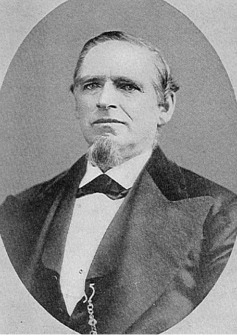

by Joseph F. Buchanan, great-great-grandson

Chapter 1
Lorenzo Wesley Roundy, who lived from 1819 to 1876, experienced a great deal of life, love and sacrifice packed into his short, almost fifty-seven, years. This history comprises a compilation of many sources and collections of facts. Lorenzo did not write much so we do not have a personal direct source of information, but because of his life and active involvement in the events of his time and place, we have a lot of details with which to work.
Annie Isadore Roundy Davis wrote a brief history of his life. Annie was not quite nine years old when her father died, so much of the history is not first-hand knowledge, but it gives a good summary of his life. It is a good way to begin telling the story of this great man because I am sure he would want to be known as a father in Zion who loved his family and the Lord, and who gave his life in serving the Lord's Kingdom.
"He was the second son of Shadrach Roundy. His mother being Betsy Quimby before she was married.
"He was born June 18, 1819 at Spafford, N.Y. His father was presiding in the town of Spafford when they heard of the Revelations of Joseph Smith, and they soon embraced the Gospel of Jesus Christ. Soon after, the family moved to Pennsylvania, and from there to Kirtland, Ohio. There they helped build the Temple. Lorenzo shared all the hardships that the Saints went through. He was a member of the Nauvoo Legion. After arriving in Salt Lake City, he was a member of the Nauvoo Legion & took part in the Indian wars in the Mormon Colony. He came to Salt Lake with his parents in the year 1847. He was 8 generation in descent from Phillip Roundy who died in Salem, Mass in 1678. He went from Salt Lake City to Centerville, Davis Co. He married Adeline Whiting in 1843. She died in 1846. By his first wife he had 2 children, boys, one died in infancy, Myron Shadrach was the one living. Then he married Susannah Wallace, 1847.
"Children as follows: Wallace Wesley, 2 Malinda Elizabeth, 3 Matilda Ann, 4 Celestia Almeda, 5 Mary Isabella, 6 Betsy 7 Napoleon Bonepart, 8 Lorenzo Wesley.
"In 1857 he married Priscilla Parrish. There was 8 children: 1 Fannie Jane, 2 Sarah, 3 Samuel H, 4 Joel Jesse, 5 Annie Isadore, 6 David Alonzo, who died in infancy 7 Lydia Annis, 8 Heber Lorenzo.
"While he was living at Centerville, he was called to go south to help settle the country, went in the year 1866, went down at Kanab, and the Indians was so bad they couldn't stay there. They killed one of the company while there. His name was Robert Berry. They went from there up to Kanarra, Iron Co., Utah. As soon as they arrived there my father went to work to make homes for his families, and to clear land to farm. There wasent any water in the valley. They had to go to the mouth of the canyon for water. They made ditches and worked with the water till they got it down in the valley. They soon put up a saw mill to saw timber for to build houses. He was chosen Bishop of the ward. They started a co-op store. He went to Salt Lake by team to bring merchandise. They also had co-op sheep herd & stock. They was still troubled with the Indians. He was captain in the Indian trouble. They went through many hardships & trials. He was a Father to the people where he resided. All the people loved him, went to him with his troubles. After he had built up Kanarra, he was prospering there, built two nice homes for his two families. He was called to go and help settle Arizona. He had made two trips, was called the third time. It was in the spring, May, when the Colorado River was very high. He told his family that he would never come back alive. They told him to send word to Brigham Young how he felt, but he said no, he would go if he knew he would never return. He went & we know the rest. Was drowned May 24. He stayed in the boat, the last one."1
Much of the chronicling of the young years of Lorenzo is found woven in the histories of his father. There are several of these works at hand that describe the life, character and experiences of Shadrach Roundy. Unfortunately, little is specifically mentioned concerning his son. Beyond this, Lorenzo did not keep a journal or write any autobiographical materials. Much of the record we have of Lorenzo is found in the reports and writings of others. It is providential that Lorenzo was involved in a significant way with the affairs of his church, the Church of Jesus Christ of Latter-day Saints (LDS) and in the colonization of Utah Territory, so we have numerous reports that refer to Lorenzo and his experiences. Much credit is due to the tireless work of Renée Rich Mounteer, who wrote the comprehensive and compelling book about the lives of Shadrach and Betsy Roundy, the parents of Lorenzo Wesley Roundy. Many thanks go to Renée for her work, which also brought much to light concerning Lorenzo and his life. Many others have contributed through various research work, particularly of note are Guy Roundy and Gail Pollock, whose dedicated work of finding and compiling references has been very valuable.
1 History of Lorenzo Wesley Roundy - as written by his daughter, Annie Isadore Roundy Davis. The handwritten pages of Annie's history, which includes this history of her father, can be found at the website: http://aeb.buchananspot.com/histories/AIRoundyLife/viewer.html .